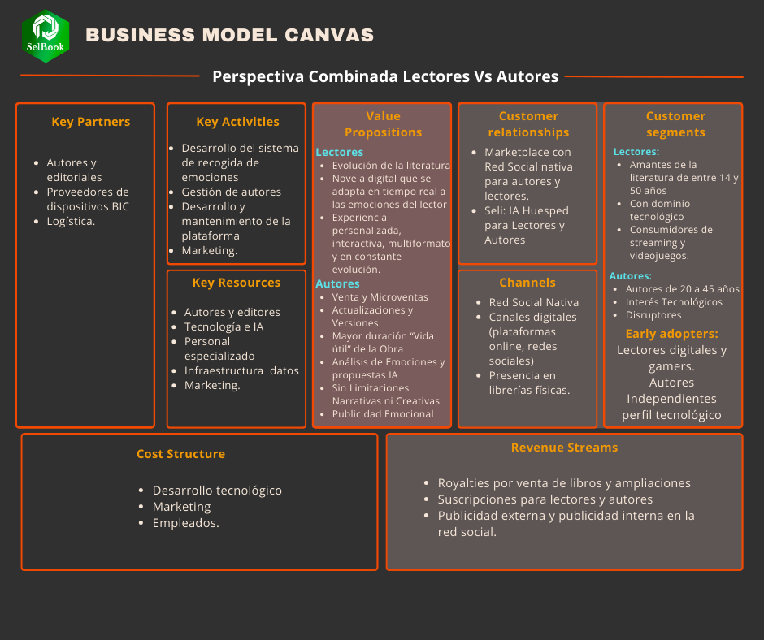

Cómo hemos visto, tratamos con un Modelo Híbrido basado en Marketplace, por lo que
veremos el Business Model Canvas de una forma conjunta y después detallaremos los elementos más
destacables en función de los sub-modelos.
Business Model Canvas combinado

El elemento clave del Selbook es su Propuesta de Valor. Vamos a verlo concretando
en sus modelos concretos.
Value Proposition
Propuesta de valor del Marketplace
En definitiva, Selbook representa un paraíso para los amantes de las historias y también para los autores:
creatividad sin límites, múltiples perspectivas y decisiones del lector. La propuesta de valor es
potente en ambos lados del marketplace.
Propuesta de valor de La Comunidad (modelo ad-based)
La Comunidad es esa charla que te encanta tener con tus amigos sobre la novela que lees, multiplicada
y potenciada. Acoge foros, clubs y canales literarios, facilita relaciones e intercambios y pone todo
ese conocimiento (emociones, experiencias, relaciones) al servicio de anunciantes bajo una gobernanza ética
de datos, diferenciando el modelo publicitario.
Selbook tendrá gran presencia a lo largo de toda la experiencia (canales, librerías, cafeterías oficiales,
atención al cliente y soporte). La pieza clave es Sely.
Sely es la IA Anfitriona, entrenada en todas las disciplinas y necesidades del usuario. Cada lector,
usuario o autor dispondrá de su Sely personalizada según sus lecturas, elecciones, consultas y relaciones
en la Red Social.
El objetivo es que Sely conozca al usuario mejor que él mismo para optimizar su experiencia lectora y
ayudar, aconsejar y resolver cualquier necesidad.
🤖 Las funciones de Sely
Key Activities
1️⃣ Desarrollo Tecnológico y Plataforma Digital
Interfaz e integración BIC-Selbook: integrar el potencial sensitivo del BIC con la IA de perfiles y rutas
Desarrollo y mantenimiento del marketplace y la red social
IA Generativa: evolución de las capacidades multimedia
2️⃣ Gestión de Contenidos y Relaciones con Autores
Automatización de servicios editoriales con IA y workflows
Plataforma de autopublicación tipo Kindle Publishing
Captación de autores y obras destacando beneficios del modelo
3️⃣ Desarrollo de Modelos de IA y Análisis de Datos
Desarrollo de Sely como ariete de la experiencia
Recogida y análisis de datos de emociones y comportamiento
Métricas clave de uso, interacción y efectividad del contenido
4️⃣ Marketing y Captación de Usuarios
Adquisición: SEO, SEM, redes sociales y alianzas
Posicionamiento y campañas que refuercen misión y propuesta
5️⃣ Gestión de la Red Social Nativa
Fomentar interacciones entre autores y lectores
Moderación y soporte para un entorno seguro
6️⃣ Optimización del Modelo de Suscripción y Monetización
Gestión y optimización de suscripciones de lectores y autores
Monetización de ampliaciones y publicidad
7️⃣ Soporte Técnico y Atención al Cliente
Sely como primer canal de ayuda
Atención al cliente para incidencias y dudas
8️⃣ Expansión de Colaboraciones y Alianzas Estratégicas
Alianzas tecnológicas (BCI y seguimiento emocional)
Partnerships de distribución (p. ej., Kindle)
Key Resources
Plataforma tecnológica (recogida de emociones y adaptación en tiempo real)
Catálogo de Stringbooks y autores (destacados e independientes)
Equipo de desarrollo y tecnología (IA, datos, UX/UI)
Recursos financieros para desarrollo, marketing y escalabilidad
Alianzas estratégicas (tecnología y distribución)
Key Partners
Autores y Editoriales: fomentar Sello Nativo sin excluir modelos autónomos
Proveedores de Tecnología BCI: pluralidad para catálogo de dispositivos
Infraestructura Tecnológica: cloud, hosting e IA
Socios Logísticos: presencia física y entrega
Cost Structure
Desarrollo y mantenimiento de la plataforma
Tecnología BCI e I+D
Royalties a autores
Marketing y publicidad
Personal y RR. HH.
Distribución y logística
Revenue Streams
Desglosados con detalle en “Comercialización, Ingresos y Marketing”.
Comisiones por venta de Stringbooks y extensiones
Suscripción de Lectores
Suscripción de Autores y Editoriales
Publicidad interna (Autores y Editoriales) en La Comunidad
Publicidad de terceros en La Comunidad
Venta de Dispositivos Selbook
En la siguiente sección...
Canales, Network Effect y Motor de Crecimiento 👉🏽
El Network Effect es una característica esencial en el Modelo de Negocio y clave de su motor de crecimiento. Lo exponemos en detalle.
Desdes estas tarjetas puedes acceder a otras secciones principales del estudio. Si colocas el cursor encima, podrás ver un listado de los puntos que contiene esa sección. Te recomendamos ir por orden.
La red social de Selbook, supervisada por Sely (IA), donde se conversa y comparte sin spoilers.
La privacidad se gestiona por niveles según las “8 Leyes de Sely”.
Ads nativos integrados en los flujos de Comunidad (sin romper la experiencia).
Segmentación por intereses y señales emocionales anonimizadas (mejor ROI).
Brand safety: Sely modera, evita spoilers y controla la exposición publicitaria.
4 niveles de La Comunidad
El-Parque
Público. Convivencia de tiendas, promociones, librerías y cafeterías.
Sely modera para evitar spoilers.
Publicidad segmentada alineada a intereses.
📚 La-Librería
Entrada al entorno Selbook: compra de Stringbooks, dispositivos y complementos. Librería central y secundarias para afiliados/autores (miembros).
Comprar historias, extensiones y dimensiones.
Comprar dispositivos Selbook.
Leer/escribir reseñas.
Sely aconseja y ayuda a gestionar compras.
☕ La-Cafetería
Alta privacidad. Charlas entre amigos y debates sin spoilers; cafeterías temáticas y contenido audiovisual de Sely.
Canales temáticos moderados por Sely.
Intercambio audiovisual nativo.
Control según progreso de lectura.
📍 Tu-Mesa
Nivel más privado: interacción solo con amigos, chat y personalización de la experiencia.
Las 8 Leyes de Sely
Las 8 Leyes de Sely
Sely debe velar por la salud emocional y psicológica del usuario, evitando situaciones dañinas.
Sely debe provocar emociones y sensaciones sin incumplir la primera ley.
Sely nunca accederá a información personal sin el permiso del usuario.
Sely no compartirá información personal con terceros sin autorización.
Sely no promoverá prejuicios ni discriminación de ningún tipo.
Sely no permitirá influencias externas de adoctrinamiento político o ideológico.
El usuario tiene derecho a la eliminación completa de sus datos.
Sely debe asegurar que el usuario viva la mejor historia posible, respetando las leyes anteriores.